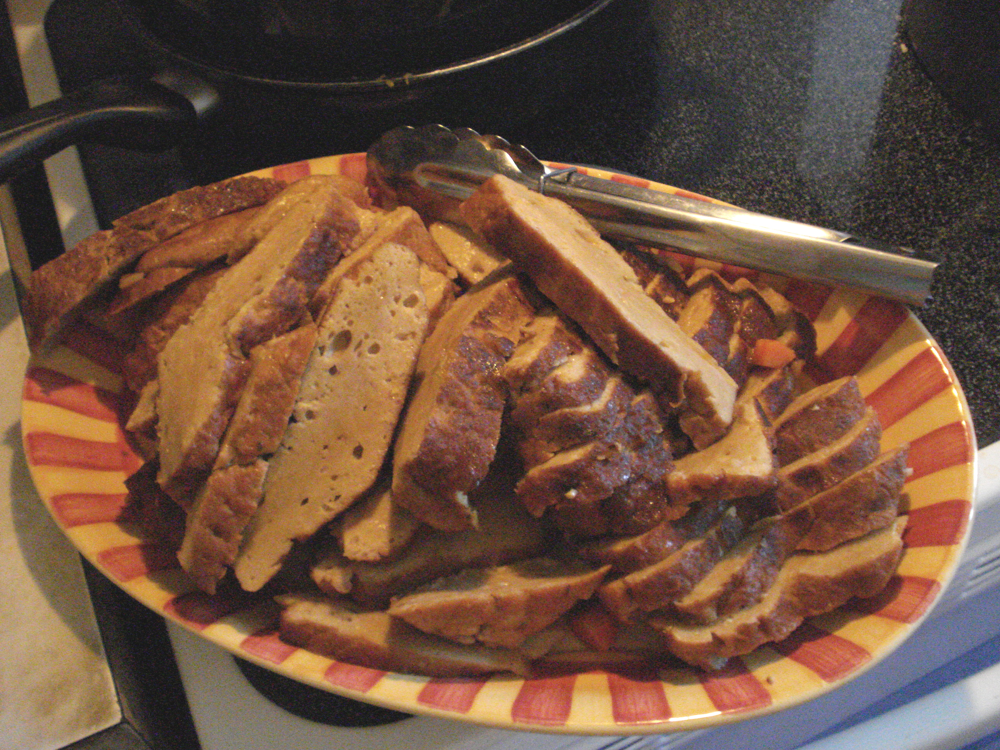

Seitan

This is a recipe for seitan. It produces a very sizable portion, but can be scaled down.
Seitan is food made out of vital gluten. It works great as vegan protein - it is a popular meat substitute due to its high protein content and its meat-like texture.
Ingredients
- Vital gluten: 1kg
- Yeast flakes: 125g
- Onion powder (or granules): 3 tbsp
- Chicken seasoning (or similar): 3 tbsp
- Tahini paste: 75g
- Vegan stock: 1/2 cube
- Garlic powder (or granules): 1 tbsp
- Paprika: 1 tbsp
- Pepper: 2 tsp
- Cumin: 1 tbsp
- Salt: 2 tsp
- Soy sauce: 1 tbsp
- Warm water: 2 liters
Steps
- Mix all the dry ingredients (all the ingredients except for tahini paste, soya sauce, and water)
- In another container, mix the tahini paste with water and soy sauce
- Mix the dry ingredients and the wet ingredients into one consistent mixture
- Divide the mixture into logs and put the logs into baking paper and/or tin foil
- Bake at 115 degrees Celsius for about an hour. Use the steam function if supported by the oven, otherwise put some water in an ovenproof container under the seitan mixture.
- Let rest for 45 minutes. Eat fresh or refrigerate/freeze. Enjoy!
Back to the recipe list